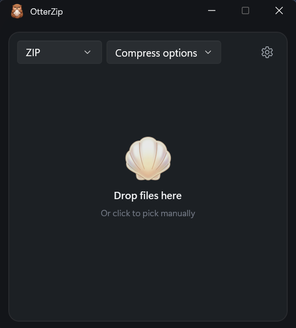
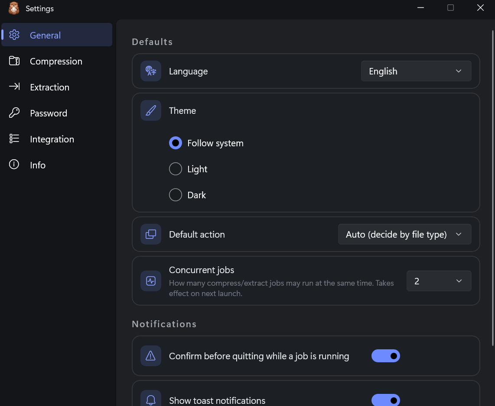

Right-click a file — it's zipped. Right-click an archive — it's out. You barely open the app.
by LumiBear Studio
No modes, no clutter, no learning curve. When you do open the window, everything is already where you'd expect.

No bundles, no nagging, nothing to sign up for. It compresses and extracts, then gets out of your way. Crash reports are strictly opt-in.
The engine is written in Rust — native code that does the work and doesn't leave you waiting.

Built with C# and WinUI — a real native interface, not a web page in a window. Fluent design, light or dark, ten languages.
ZIP, 7z, RAR, TAR and more — with AES-256 and split archives when you need them.
The free download and the Store version are the exact same app. Pick whichever suits you.
Install and update automatically through the Microsoft Store. Supports active development.
Windows 11 · Automatic updates · Recommended
Download the MSIX installer directly. Exactly the same app, no ads, no account required.
Windows 11 · Free MSIX installer